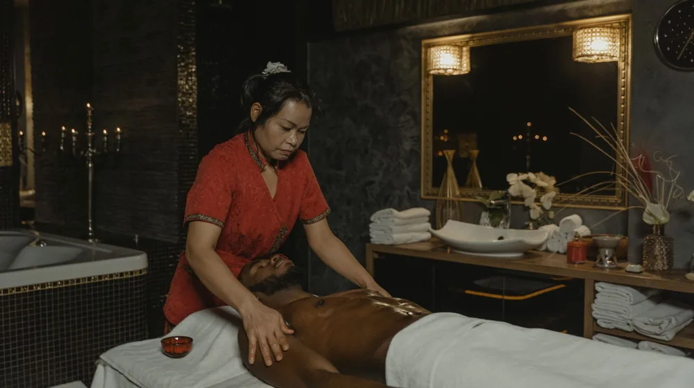

내 몸이 원하는 한방 스파: 태양인부터 소음인까지 완벽 가이드
사진: https://kaboompics.com/ / Pexels (무료 이미지, 출처 표기)
피로가 쌓였다면, 내 체질에 맞는 한방 스파를 선택하세요

피곤이 쌓여 스파를 찾지만, 막상 어떤 프로그램이 내게 맞을지 고민되시나요? 특히 한방 스파는 단순히 몸을 쉬게 하는 것을 넘어, 한국 전통 의학에서 이재마 선생이 창시한 체질 분류법인 '사상체질'에 맞는 접근으로 더 깊은 치유와 균형을 선사할 수 있습니다. 무작정 인기 있는 스파를 찾기보다, 나에게 꼭 맞는 한방 스파를 찾아보는 것은 어떨까요? 이 글에서는 사상체질별 특징부터 맞춤형 스파 프로그램 선택 가이드까지 자세히 알려드립니다.
사상체질별 특징과 맞춤 한방 스파 추천
사상체질은 사람의 신체적 특징, 성격, 심리 상태 등을 네 가지 유형(태양인, 태음인, 소양인, 소음인)으로 나누어 파악하고, 이에 따라 적합한 음식, 운동, 치료법 등을 제시합니다. 한방 스파 역시 이러한 체질적 특성을 고려하여, 각 체질이 필요로 하는 기운을 보강하거나 과도한 기운을 다스리는 방식으로 프로그램을 구성합니다.
물론 자신의 정확한 체질은 한의원 방문을 통해 진단받는 것이 가장 좋습니다. 하지만 위 내용을 통해 대략적인 방향성을 잡고 스파 프로그램을 선택하는 데 도움을 받을 수 있습니다.
나에게 맞는 한방 스파 프로그램 선택 체크리스트
체질을 고려했다고 해서 모든 스파가 만족스러운 경험을 제공하는 것은 아닙니다. 아래 체크리스트를 통해 자신에게 적합한 한방 스파를 선택하는 데 참고하세요.
- 전문가 상담 유무: 스파에 한의사 또는 전문 테라피스트가 상주하여 개인의 체질과 건강 상태에 맞는 프로그램을 추천하는지 확인합니다.
- 사용하는 약재/오일 성분 확인: 어떤 한약재나 아로마 오일을 사용하는지, 성분은 투명하게 공개되는지 점검합니다. 개인에게 맞지 않는 성분이 있을 수 있습니다.
- 시설의 청결도 및 위생 상태: 스파 시설의 청결도는 기본적인 만족도를 결정하는 중요한 요소입니다. 방문 전 후기나 사진을 통해 확인해보세요.
- 가격대 및 이용 시간: 자신의 예산과 스케줄에 맞는 프로그램을 선택합니다. 여러 프로그램을 비교해보고 장기적인 관리가 가능한 곳인지도 고려할 수 있습니다.
- 개인의 건강 상태 및 알레르기 유무: 만성 질환이 있거나 특정 성분에 알레르기가 있다면, 반드시 스파 이용 전 해당 사실을 알리고 전문가와 상담해야 합니다.
한방 스파의 다양한 프로그램 유형 알아보기
한방 스파에서는 체질과 목적에 따라 다채로운 프로그램을 운영합니다. 대표적인 프로그램 유형은 다음과 같습니다.
- 한방 약재 활용 족욕/반신욕: 체질별 약재(예: 쑥, 당귀, 솔잎 등)를 활용하여 혈액순환을 돕고 몸의 노폐물 배출을 유도합니다.
- 체질별 아로마 오일 마사지: 각 체질에 맞는 아로마 오일(예: 태음인에게는 유자, 소음인에게는 생강)을 사용하여 근육 이완과 심신 안정을 돕습니다.
- 약재 팩 또는 온열 요법: 특정 부위에 약재 팩을 도포하거나 온열 기구를 활용하여 통증 완화, 부종 개선, 기혈 순환 촉진 등의 효과를 기대할 수 있습니다.
- 경혈 자극 마사지: 전문 테라피스트가 신체의 주요 경혈을 자극하여 막힌 기운을 뚫고, 통증을 완화하며, 몸의 균형을 되찾도록 돕습니다.
- 해독/순환 프로그램: 독소 배출과 신진대사 활성화를 목표로 하는 프로그램으로, 체질에 맞는 발한, 이뇨, 배변 촉진 요법 등을 포함할 수 있습니다.
한방 스파 효과를 높이는 이용 팁 및 주의사항
한방 스파를 단순히 일회성 이벤트로 즐기는 것을 넘어, 최대의 효과를 누리려면 몇 가지 사항을 지키는 것이 좋습니다.
- 스파 전후 충분한 수분 섭취: 스파 도중 땀 배출이 많으므로 탈수를 방지하고 노폐물 배출을 돕기 위해 물을 충분히 마시는 것이 중요합니다.
- 음주나 과식 피하기: 스파 전 음주나 과식은 혈액순환에 방해가 되고 몸에 부담을 줄 수 있으므로 피하는 것이 좋습니다.
- 무리한 프로그램은 삼가기: 특히 처음 한방 스파를 이용하는 경우, 자신의 체력과 몸 상태에 맞춰 가볍게 시작하고, 강도를 조절해야 합니다.
- 임산부, 특정 질환자는 반드시 전문가와 상담: 임산부, 고혈압, 심장 질환, 피부 질환 등의 특정 건강 문제를 가진 분들은 스파 이용 전 반드시 주치의나 스파 담당자와 상담해야 합니다.
- 꾸준한 관리의 중요성: 한방 스파는 일회성보다는 정기적인 관리를 통해 체질 개선과 건강 증진에 더욱 큰 효과를 볼 수 있습니다.
한방 스파, 어디서 찾을 수 있을까요?
한방 스파는 다양한 형태로 운영되고 있습니다. 자신의 위치와 원하는 서비스 수준에 따라 선택지가 달라질 수 있습니다.
- 한의원과 연계된 스파: 일부 한의원에서는 진료 후 체질에 맞는 한방 스파 프로그램을 제공하기도 합니다. 보다 전문적인 체질 진단과 연계된 관리를 받을 수 있다는 장점이 있습니다.
- 전문 한방 스파 & 리조트: 도심 또는 자연 속에서 한방 테라피에 특화된 프로그램을 운영하는 전문 스파나 리조트도 있습니다. 숙박과 함께 심도 있는 웰니스 경험을 제공하는 경우가 많습니다.
- 일반 스파의 한방 테라피 프로그램: 일반적인 호텔 스파나 고급 스파에서도 한방 약재나 동양 전통 요법을 접목한 프로그램을 선보이기도 합니다.
이용 전 전화 상담을 통해 본인의 체질에 맞는 프로그램이 있는지, 어떤 방식으로 운영되는지 문의하는 것이 중요합니다. 2024년 8월 기준으로, 각 스파의 프로그램 및 가격은 변동될 수 있으므로, 정확한 사항은 공식 홈페이지나 해당 기관에서 다시 확인하시길 권장합니다.
🔗 이 글도 함께 보면 좋아요: 이번 주말 볼거리 추천: OTT 영화, 드라마, 다큐 정주행 가이드
관련 추천 상품
한방 입욕제, 아로마 오일, 괄사 마사지 관련 인기 상품 보러가기
이 포스팅은 쿠팡 파트너스 활동의 일환으로, 이에 따른 일정액의 수수료를 제공받습니다.